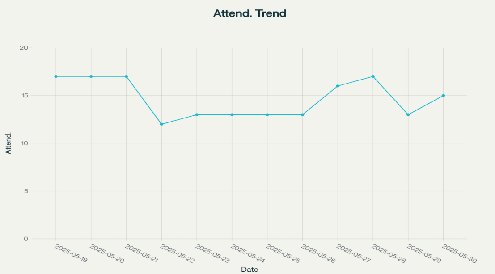

Weekly Feedback Data and Participation Statistics¶
1. Intensive Attendance Overview (May 19-30, 2025)¶
Total Cohort Analysis:¶
-
Total participants: 21*
-
Intensive duration: 12 days (May 19 - 30, 2025)
-
Hacking period: May 26-30
-
Total Regular Participants: 17 participants
-
Average Daily Participation: 71.82%
-
Peak attendance days: 19, 20, 21, 27, 28 May
*One participant did not join a team. Statistics are calculated out of 20.

| Date | Bins to Cash | Bars on Bars | CarPool | Daily Total |
|---|---|---|---|---|
| 2025-05-19* | - | - | - | 17 |
| 2025-05-20 | 6 | 5 | 6 | 17 |
| 2025-05-21 | 5 | 6 | 6 | 17 |
| 2025-05-22 | 5 | 2 | 5 | 12 |
| 2025-05-23 | 5 | 4 | 4 | 13 |
| 2025-05-24 | 5 | 4 | 4 | 13 |
| 2025-05-25 | 5 | 4 | 4 | 13 |
| 2025-05-26 | 5 | 5 | 3 | 13 |
| 2025-05-27 | 6 | 6 | 4 | 16 |
| 2025-05-28 | 7 | 5 | 4 | 16 |
| 2025-05-29 | 6 | 3 | 4 | 13 |
| 2025-05-30 | 7 | 4 | 4 | 15 |
* On day 1, the 19th, attendance was not taken
2. Feedback Participation Overview¶
a. Growth Evaluation Form (Daily Self & Peer Ratings, May 26–30, 2025)¶
This form asked participants for qualitative and quantitative reporting of the perceived value that they and their team members created that day (based on four criteria that they had collectively co-created as a cohort). In order of weightage, these were: Interpersonal Relations, Leraning & Growth, Ideation & Creativity, Contribution & Productivity
- Form participation rate: 91% of attending cohort (19/21 attendees submitted forms)
- Total valid submissions: 41 submissions over 5 days
Daily engagement correlation with attendance:
-
May 26: 12 forms submitted / 13 attendees = 92% response rate
-
May 27 - 29: 7/16, 6/17, 4/13 = Avg. 36% response rate (Core Hacking Days)
-
May 30: 17 forms submitted / 17 attendees = 100% response rate
b. Value Check-In Form¶
This form was administered once at the start and once at the middle of the intensive - it asked participants about their goals, dreams and expectations, and how our programming was offering value to them.
- Responses: 20
- Unique respondents: 15
- Intensive start responses: 10
- Intensive middle responses: 10
c. Facilitation Effectiveness Evaluation Form¶
This form, administered at the end of week 1, was used to ask participants about what tools and concepts they found useful in their work, and was the primary source of adjustments made to programming the following week.
- Total valid respondents: 11
- Participation rate: 52% of total cohort (11/20)
Note on Feedback Form Participation Rates: The growth evaluation form was the most critical measure of participation, and had high rates. For the other two, stronger incentivization mechanisms might have increased submissions.
4. Team Participation Rates¶
| Team | Est. Team Size | Consistent Attendees | Growth Forms | Average Daily Participation Rate |
|---|---|---|---|---|
| Bars on Bars | 7 | 5 | 11 | 72.73% |
| Bins to Cash | 6 | 6 | 16 | 80.52% |
| CarPool | 7 | 6 | 14 | 62.34% |
| Cohort Total | 20 (+1*) | 18 | 41 | 71.82% |
* 1 member didn’t join any team but learned alongside asynchronously
5. Qualitative Participation Insights
Over the course of the intensive program, three key qualitative learning moments stood out:
-
Exploration and Community Connection: Participants engaged in individual explorations of their communities, allowing them to surface real challenges and opportunities. These insights laid the foundation for understanding their role as change agents within their local ecosystems.
-
Dream Village as an Aspirational Model: The "Dream Village" excursion served as a powerful visioning tool. It helped participants conceptualize high-impact, community-centered initiatives and gave them a shared language for what transformation could look like.
-
Collaborative Service Design: Working in teams to co-develop a service enhanced participants' sense of ownership and purpose. This collaborative creation process also strengthened their technical skills and teamwork dynamics.
Across these activities, participants demonstrated a strong capacity to self-organize, respond to community needs, and apply a growth mindset toward technology and leadership.
6. Recommendations for Future Engagement¶
Based on the qualitative findings and ongoing observation, we propose the following strategies to strengthen future engagement:
-
Prioritize Deep Community Integration Early On:
Participants were most motivated when their work was directly connected to local community needs. At the start of the program (e.g., during ALJ onboarding), intentionally embed community mapping, stakeholder interviews, or field immersion to build this connection early. -
Foster Distributed Leadership within Teams:
Empower teams to rotate or share leadership roles based on their members’ strengths and skill sets. This not only helps distribute workload but also builds resilience against common barriers like time constraints or personal burnout. -
Cultivate a Long-Term Vision of Impact:
Encourage participants to frame their projects not just as short-term deliverables but as seeds of longer-term community transformation. Introduce frameworks or guest speakers that model sustainable impact and iterative development.